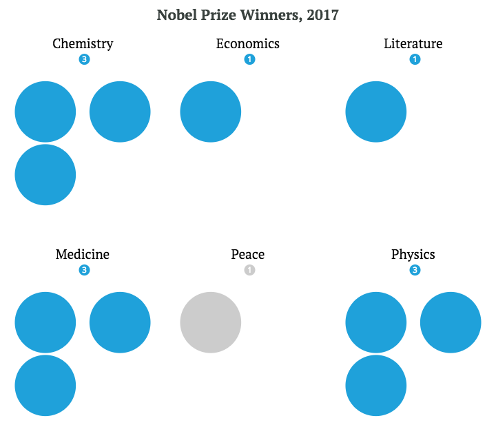
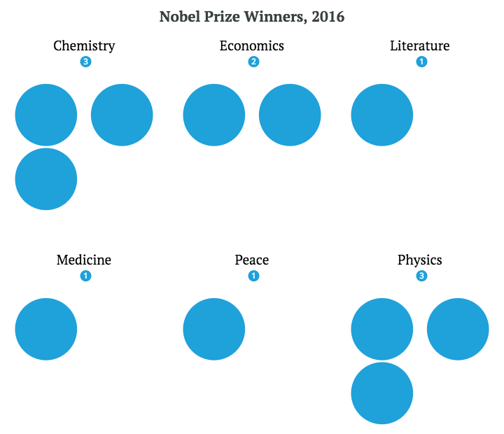
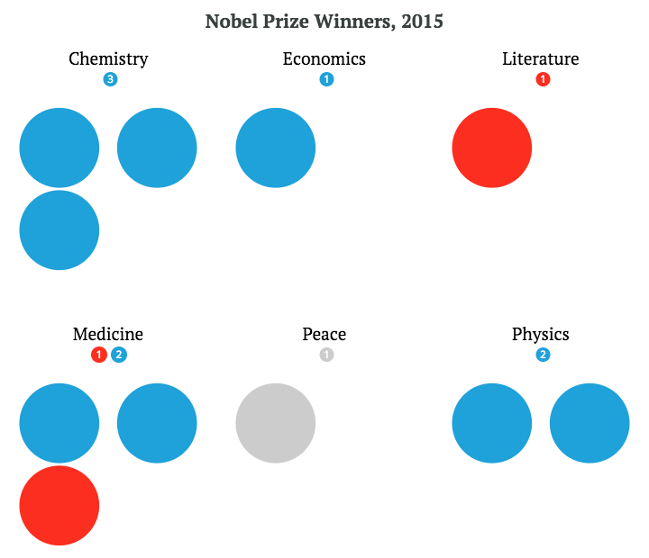
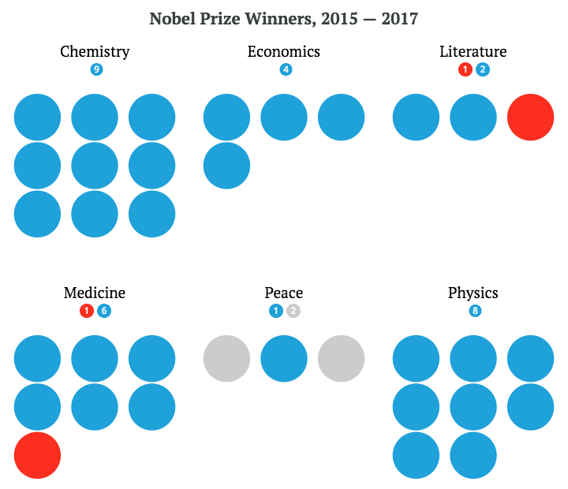
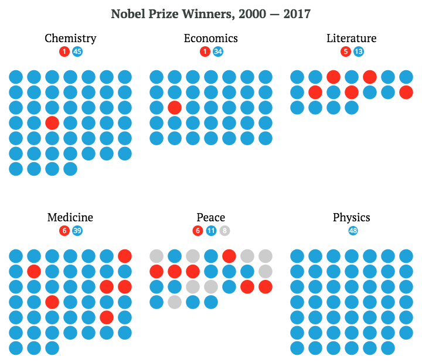
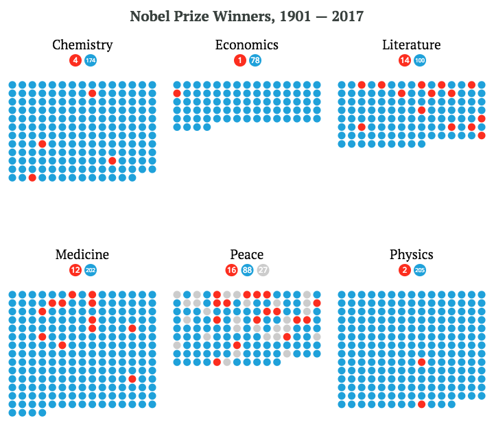
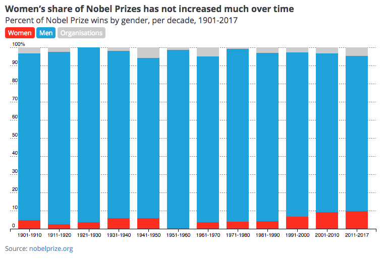

The Nobel Prizes: So male?
By Harry Stevens | 9 October, 2017
For over a hundred years, men have dominated the Nobel Prizes. And even as women have entered public life, men continue to win most of the prizes. Why?
The last of 2017’s Nobel Prizes was announced today, with Richard Thaler, the pathbreaking behavioural economist, receiving the prize in economics. He joined 10 other men and one organisation as this year’s batch of laureates. Hover over the dots to learn more about the winners.
The group does not include a single woman. It makes you wonder — is that normal? Let’s go back in time to find out. Scroll
Last year, 11 men won Nobel Prizes. Among them were the Colombian politician Juan Manuel Santos, who negotiated a peace treaty to end his country’s civil war, and the legendary American musician Bob Dylan.
But again, the Nobel judges did not find any women worthy of the prize. There is an old saying: two is a coincidence, three is a trend. So how about the year before? Scroll
In 2015, two women — the Ukranian writer Svetlana Alexievich and the Chinese chemist Youyou Tuwon — won Nobel Prizes. They were joined by eight men and one organisation. Scroll
Let’s do a quick tally: in the last three years, two of the winners have been organisations, two have been women, and 29 have been men.
That's about 6%, 6% and 88%, respectively.
Scroll
If we take a slightly longer view — all winners since the turn of the century — we get similar results: 8 organisations 4%, 19 women 9%, and 189 men 87%. Scroll
Since 1901, the Nobel Prizes have been awarded to 27 organisations 3%, 49 women 5%, and 847 men 92%.
Since 1901, the Nobel Prizes have been awarded to , , and . Due to rounding, the percentages might not add up to 100.
Use the slider to adjust the years. Try to find any span of time in which more women won than men.
To be sure, the brilliant men who have received the Nobel Prize deserved the honour. Still, it’s a wonder that they have not been joined by more women.
One possibility is that women simply do not participate in academia as much as men do. But that explanation is unlikely. The statistician Melanie Kovalchik found that up until the 1970s, women received Nobel Prizes in science roughly in proportion to the number of women who were professional scientists. But as the number of women scientists increased in the following decades, their Nobel Prize wins did not.
The same phenomenon has played out across all six Nobel categories. Even as women have claimed more space for themselves in public life, the Nobel Prize awards have not kept pace.
Perhaps the gender imbalance is reflected in the judges’ genders. Of the 36 judges of this year’s prizes, 27 were men and nine were women. Only in the categories of literature and peace were there an equal number of female and male judges. In economics, all six judges were men.
Of course, there is no guarantee that a male judge will favour male nominees, or that a female judge will favour female ones. But whatever the reason, the Nobel committee has acknowledged the gender gap.
“The panel says they are concerned and they are taking measures to improve the situation,” the Guardian reported. “They think things will improve and hope it will be different in five to ten years time.”
Image credit: Wikipedia. Download the data - Winners 1901-2017 (CSV), Judges 2017 (CSV).
{kind=link}